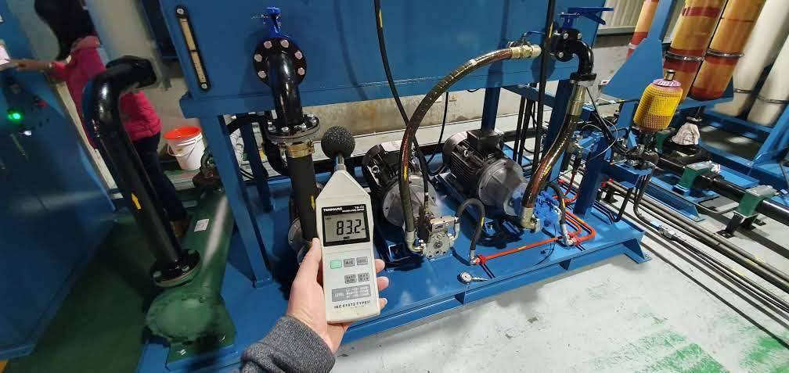

低頻聲很會「騙方向」
一般高頻聲比較容易靠耳朵判斷方向，但低頻聲波波長長、容易繞射，也可能透過梁柱、樓板、支架與管路進入建築。住戶在房間裡覺得聲音從左邊來，真正設備卻可能在樓下、屋頂甚至另一個方向。
所以第一原則不是猜：把設備「開、關」和住戶端或鄰界端的變化做比對。能重複驗證的變化，比單次聽感可靠。
現場找聲源，通常照這個順序
1. 先記時段
是哪個班別、哪個製程、哪一段夜間特別明顯？
2. 列設備清單
風機、空壓機、冷卻水塔、泵浦、集塵、冰水主機，有沒有輪流啟停？
3. 做逐台啟停
在受影響點同步觀察聲壓、頻譜或振動是否跟著改變。
4. 看傳遞路徑
設備底座、管線、支架、牆體與風管是不是把振動帶出去。
只看 dB(A)，有時會漏掉重點
低頻案件裡，總 dB(A) 可能沒有高得很誇張，但某個低頻頻帶卻很突出。實務上除了總音量，也會看頻率分布、背景值、設備啟停前後差異，必要時再搭配振動量測。不是量得越多越專業，而是要量到能回答「到底是哪一台、哪條路徑」這個問題。
找到聲源後，改善方法才有意義
風口／排氣聲：往消音器、消音風道、出口方向處理。
機體空氣聲：考慮隔音罩、機房補強或局部屏障。
基座傳振：處理避震器、底座、剛性短路。
管路傳振：檢查軟接、吊架、固定點與穿牆處。
多台設備疊加：先找主因，別平均花錢在每一台上。
機體空氣聲：考慮隔音罩、機房補強或局部屏障。
基座傳振：處理避震器、底座、剛性短路。
管路傳振：檢查軟接、吊架、固定點與穿牆處。
多台設備疊加：先找主因，別平均花錢在每一台上。
桃園、新竹工業區特別常見的狀況
工廠靠近住宅、宿舍或辦公區時，白天背景音高，設備低頻不一定顯眼；到了夜間，背景音下降，同一台風機、空壓機或水塔就會被放大感受到。桃園、新竹、新北、台北及全台案件，都可以先從設備時程與受影響位置開始整理。
延伸閱讀：低頻噪音改善主頁、晚上一直有嗡嗡聲？、工廠被噪音陳情後第一步、大樓低頻噪音案例。
常見問題
鄰居說有低頻聲，但廠內聽不太到，可能嗎？
可能。設備附近有其他背景聲掩蔽，或某個受音點剛好受到反射、共振或結構傳振影響，廠外反而更明顯。
先做隔音牆能不能解決？
要看主因。如果聲音主要走空氣，屏障可能有效；如果是樓板、管路或基座傳振，隔音牆就不是第一優先。
要不要請鄰居配合停機測試？
若能在受影響位置同步觀察逐台停機前後差異，對確認聲源非常有價值，也比較容易建立雙方共同事實。